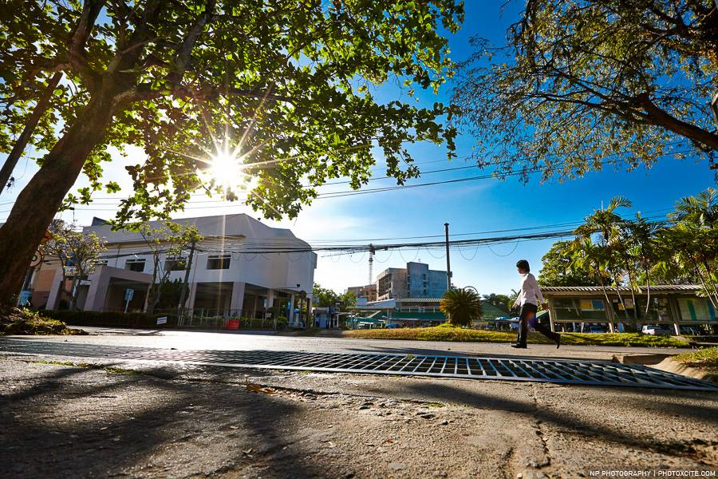
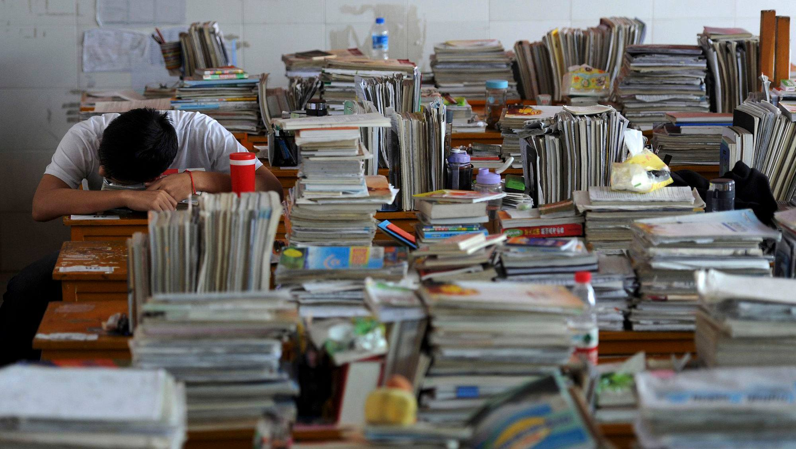
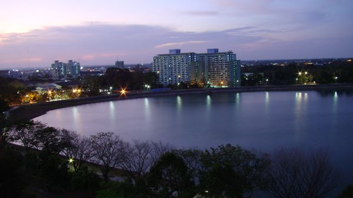
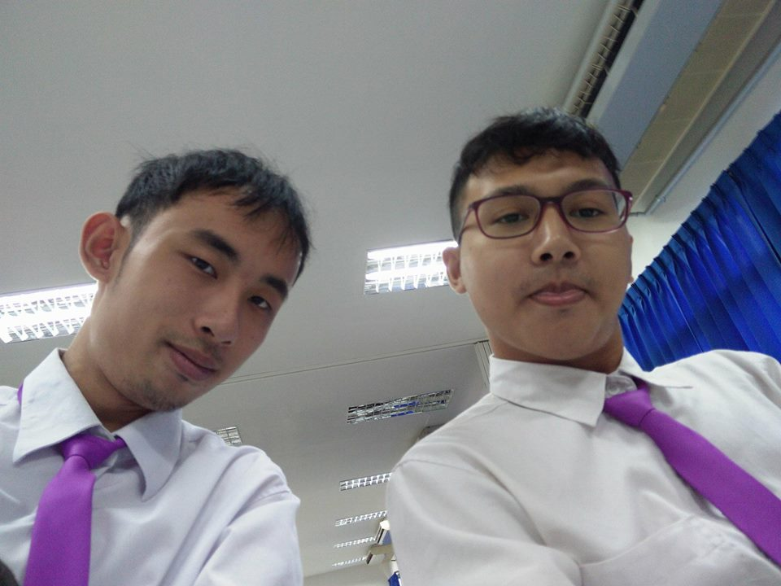

เกี่ยวกับเรา
ช่องทางติดต่อ
Link 1
Link 2
Link 3
Link 4

ชีวิตการเรียนรู้ในมหาวิทยาลัยสงขลานครินทร์
ยินดีต้อนรับสู่ไดอารี่ของพวกเรา
ทุกการเดินทางย่อมมีเรื่องราวพวกเราจะนำเสนอสิ่งที่ได้ประสบพบเจอลงไปในบทความต่างๆจะมีทั้งการเรียนกิจกรรม และชีวิตความเป็นอยู่ของพวกเราพร้อมแล้วไปลุยกันเลย.


เกี่ยวกับเรา

พวกเราคิดว่าการที่มาเรียนในรั้วมหาวิทยาลัยนั้นเป็นเรื่องที่น่ากลัวสำหรับพวกเรามากเพราะต้องอยู่คนเดียวโดยที่ไม่มีพ่อแม่มาคอยดูแลฉัน เหมือนตอนอยู่บ้าน พวกเราก็กลัวว่าจะเข้ากับเพื่อนใหม่ไม่ได้และกลัวเรียนไม่รู้เรื่องเรียนไม่ทันเขา แต่พอมาเรียนเข้าจริงๆนั้นมันกลับไม่เป็นอย่างที่พวกเรากลัวเลยเพราะการที่พวกเราได้มาเรียนที่รั้วมหาวิทยาลัยสงขลานครินทร์นั้นมันทำให้พวกเรารู้จัก การช่วยเหลือตัวเองพึ่งพาตนเองและได้รู้จักเพื่อนใหม่ๆ มีพี่ๆมาค่อยดูแลพวกเราทำให้พวกไม่เหงาและยังทำให้พวกเรากล้าที่จะแสดงออกอีกด้วย ส่วนเรื่องเรียนก็ไม่ยากอย่างที่พวกเรากลัวอีกด้วย การที่พวกเราจะใช้ชีวิตในรั้วมหาวิทยาลัยให้คุ้มกับเวลาที่พวกเรามาเรียนนั้นพวกเราต้องรู้จัก เก็บเกี่ยวความรู้เอาไว้ให้มากๆทั้งกิจกรรมในมหาวิทยาลัยหรือนอกมหาวิทยาลัย